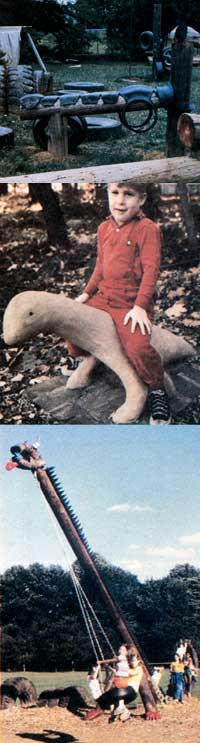

This basic wooden-pole, two-legged horse lasted 20 years in a children's nursery... A half-scale prehistoric creature made out of cement... Youngsters in the Devon (Pennsylvania) Elementary School love their Loch Ness Monster Swing.